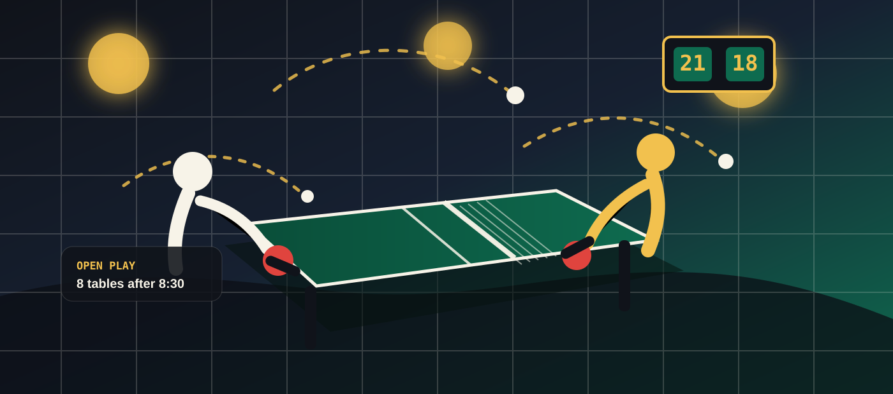

Open Play
Drop in solo or with a group. Staff match solo players by comfort level, and a center board shows beginner, social, and competitive tables.
- Weeknights after 6 PM
- Late-night Friday and Saturday
- Paddles and balls included
Neighborhood ping-pong hall · open late
Nightjar is a practical, friendly table tennis club for first-timers, regulars, families, students, and competitive amateurs who want a well-run room without the gym attitude.
regulation tables
drop-in open play
from the Orange Line
before 9 PM
More active than a bar, less formal than a gym
Nightjar keeps the important details easy to find: hours, table prices, lesson options, house rules, and the next league night. The room is social and bright under warm fixtures, with table-green floors, scoreboards on the walls, and enough structure that beginners know exactly where to go.
Bring your own paddle or borrow one at the desk. Nonalcoholic drinks and salty snacks are available, and nearby food is welcome in the bleacher zone between matches.
Play tonight
Drop in solo or with a group. Staff match solo players by comfort level, and a center board shows beginner, social, and competitive tables.
Book a table when you need a guaranteed slot, or split a walk-in table by the half hour when the room is moving.
Drop-in pass$12
Reserved table$22/hr
Youth hour$8
Keep rallies moving, rotate when the board is full, call your own edges, and make space for new players. Competitive tables are marked clearly.
Read visit notes
warm lights · fast rallies · no dress code
Coaching that does not talk down
Coaches focus on the useful stuff first: grip, serve returns, footwork, and how to keep a rally alive. You can take a one-off lesson before joining friends, or build a weekly practice routine.
45 minutes for new players who want the basics and enough confidence to join open play.
Tue–Thu · 5:15 PMSmall groups for ages 8–14 with movement games, fundamentals, and supervised match play.
Sat · 10:30 AMServe patterns, ladder strategy, and point construction for regulars who want sharper matches.
Sun · 6:00 PMLeague board
Four-week cycles, flexible match windows, and separate beginner/social and competitive divisions. Staff help place new players in the right bracket.
Next cycle starts Jun 17
Fast-moving social tournament with rotating partners, house balls, and a snack table in the bleachers.
Every 2nd Friday · 9 PM
One-night bracket for local regulars, students, and apartment teams. Spectators and nervous cheering encouraged.
Last Saturday · 7 PM
This week
Staff-led rotations, low-pressure scoring, and extra time for rules questions.
Short coaching stations before open play. Good for league tune-ups.
Friendly mixed-skill doubles until 1 AM, with quick rematches and house music low.
Find the hall
Nightjar sits between a laundromat and a corner grocer in the Mercer Market district. Bike racks are under the awning; the closest transit stop is six minutes away.
Group bookings
Send the date, headcount, and whether your group wants casual play, a mini bracket, or a coach to run the first hour.
Ask about a group night